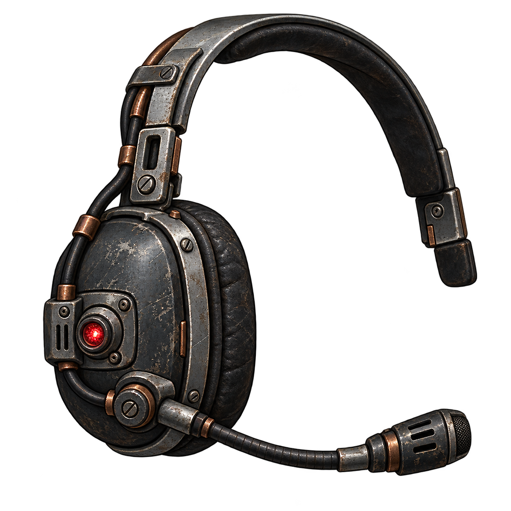
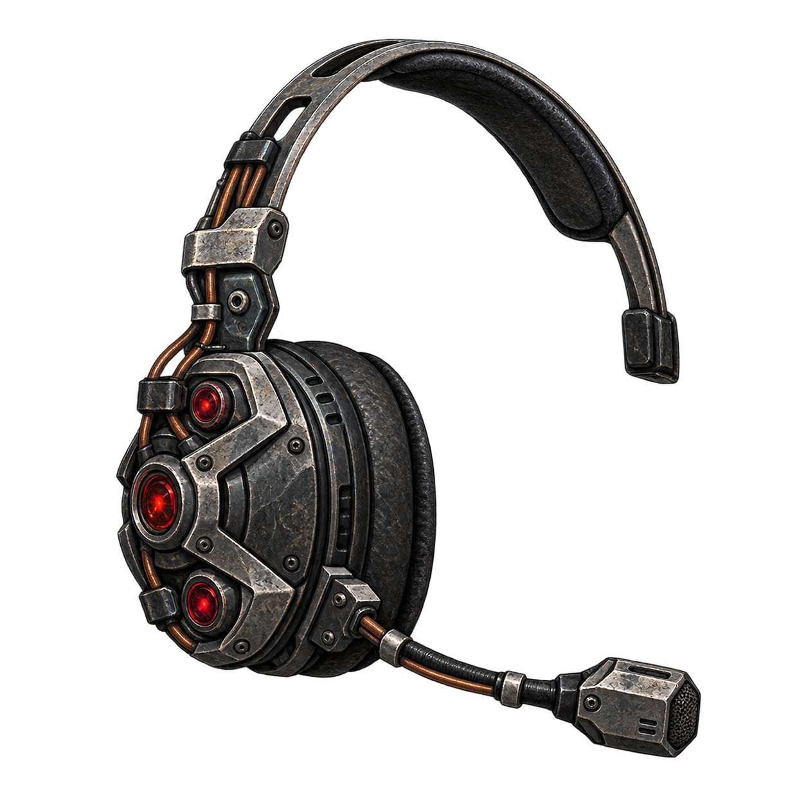

AEGIS / MULTI-TOOL-V2 1.2.0Komunikatory regeneracyjne
Dwie wersje. Jedno ogniwo. Standardowe radio działa również bez baterii. Mody medyczne są opcjonalne.

Komunikator regeneracyjny
CIŚNIENIE + REGENERACJAOchrona przed ciśnieniem, stopniowe leczenie i pełna regeneracja obsługiwanej anatomii.

Komunikator osłonowy Mk II
DODATKOWO POCHŁANIA TRAFIENIATe same funkcje oraz pochłanianie natywnych ataków z każdej strony. Silniejsze trafienia zużywają więcej energii.
Migotanie osłony i dźwięki
Podgląd poglądowy. W grze obrys śledzi rzeczywistą pozycję kończyn. Wybierz poziom baterii, aby wywołać impuls i odsłuchać efekt.
Dźwięk w grze jest przestrzenny; ciągłe leczenie i ciśnienie mają ograniczoną częstotliwość sygnałów. Orientacyjny czas działania
Pełne standardowe ogniwo: około 20 sekund samej ochrony przed ciśnieniem. Leczenie i trafienia skracają ten czas. Bot wymienia baterię poniżej 20%, jeśli znajdzie dostępny, lepszy zapas.
Grafiki: imagegen. Dźwięki: własna synteza. Osłona: geometria i animacja Lua. Zgodność z nieznanymi mechanikami modów wymaga adapterów.